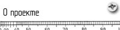
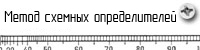
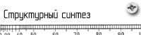
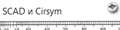
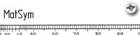
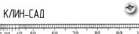
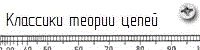
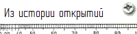

|  |
 |
|  |
|  |
|  |
|  |
|  |
|  |
|  |
| Публикации | Диссертация Филаретова В. В. |
Диссертация Курганова С. А. |
Диссертация Горшкова К. С. |
Конференции | Отчет по гранту РФФИ №15-07-05847 | ||
Пример 2. Расчет колебательного контура методом схемных определителей
Рассмотрим схему числителя.Емкость и индуктивность замещаются операторными сопротивлениями, элементы R1 и L1 объединяются вследствие последовательного соединения.
Формирование определителя выполняется по формуле выделения параметров:
где χi∈{R, g, K, G, H, B}; – определитель первой производной схемы, полученной из исходной схемы в результате присвоения параметру χ значения, стремящегося к бесконечности (сопротивление удаляется, проводимость заменяется на схеме идеальным проводником (стягивается), управляемые источники (УИ) заменяются на нуллоры [190]); Δ(χ=0) – определитель второй производной схемы, которая образована в результате нейтрализации выделяемого элемента, то есть принятия χ=0 (сопротивление стягивается, проводимость удаляется, УИ нейтрализуется). Выполним выделение емкостной проводимости. Мы получаем схемно-алгебраическую формулу:
Отметим, что первое слагаемое содержит в себе замкнутый контур из нуллатора. Это признак вырождения производной подсхемы, то есть её определитель будет равен нулю: Δ(С1→∞)= 0. Таким образом, при соединении проводимости параллельно с норатором или нуллатором, этот элемент можно из подсхемы удалять. Теперь выделяем сопротивление из второй подсхемы:
Первая подсхема в образовавшемся схемно-алгебраическом выражении содержит разомкнутые норатор и нуллатор. Это также свидетельствует о вырождении схемы: Δ((R1+pL1)→∞)=0. Вторая подсхема соответствует простейшей, с определителем равным единице: Δ((R1+pL1)=0)=1. Таким образом, определитель схемы числителя равен ΔN=1. Перейдем к схеме знаменателя. Напомним, что она образована путем нейтрализации входного воздействия. В этом случае источник заменяется на проводник, а выходное напряжение будет равно нулю.
Рассчитываем определитель схемы по формуле выделения (1):
Выделим емкостную проводимость мы получили две простейшие подсхемы. Их определители известны (см. Основы МСО. Простейшие схемы.). Таким образом, мы получаем выражение для знаменателя: ΔD= pC1(R1+pL1)+1. Теперь запишем окончательный результат:
|
|||||||